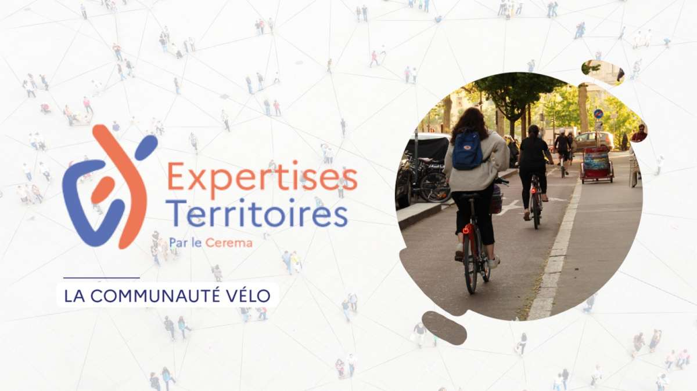

Projet 1 : Application de Location de Vélos
Lieu : Institut des Technologies de l'Information (IIT)
Durée : 2 mois (Février - Mars 2024)
Technologies : PHP, MySQL, HTML5, CSS3
Objectif : Développer une application web de gestion de location de vélos permettant aux utilisateurs de réserver des vélos en ligne, avec un système de gestion des disponibilités et un tableau de bord administrateur.
Fonctionnalités développées :
- Système d'authentification (inscription/connexion)
- Catalogue de vélos disponibles avec filtres
- Système de réservation en temps réel
- Gestion des utilisateurs et des réservations (Admin)
- Historique des locations